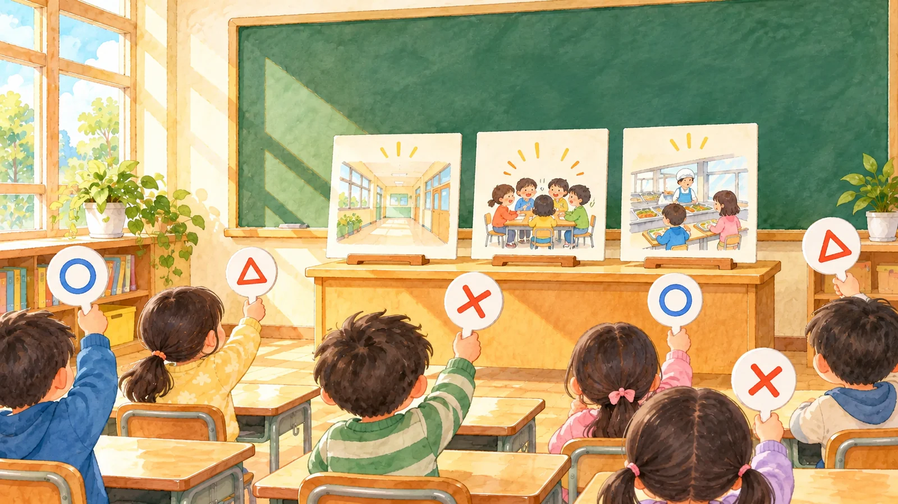
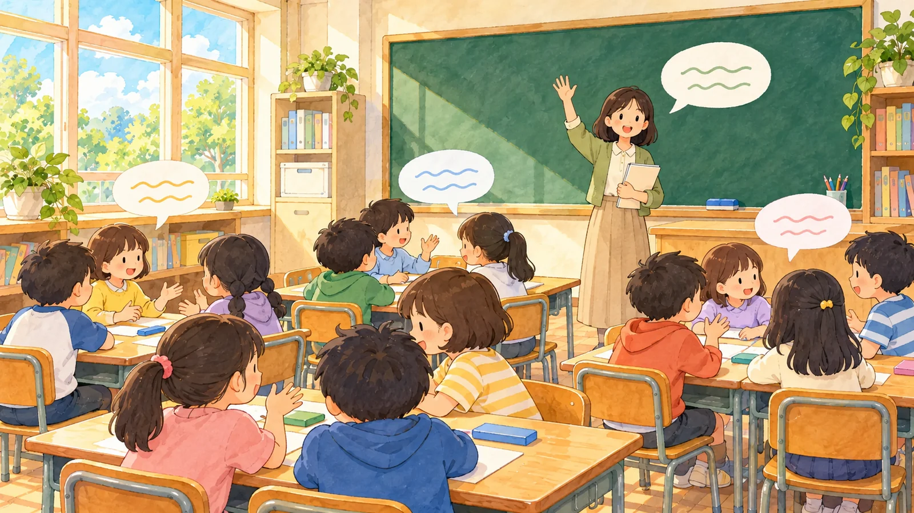
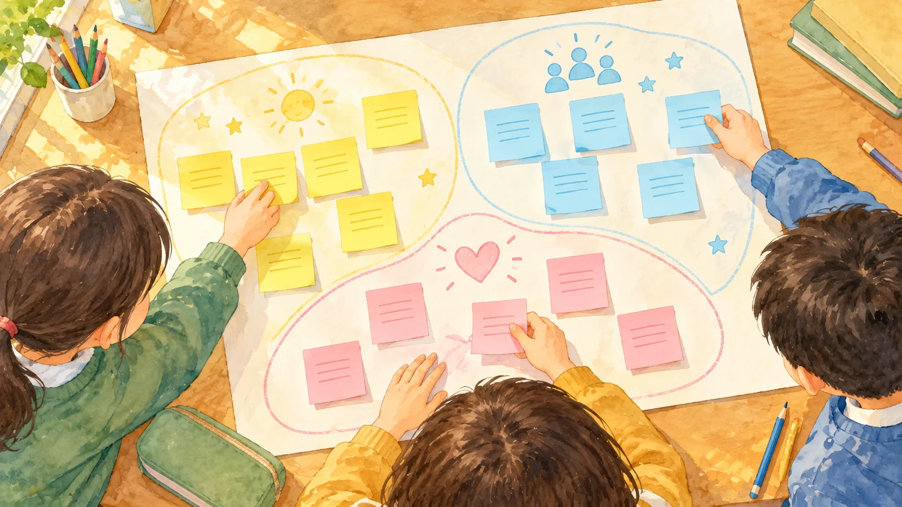

가장 자주 걸린 기준 짚기
어느 기준이 자주 걸렸나요
새 판 받기를 눌러 표를 받아요. ✕가 가장 많을 기준을 짚고 세로로 보기를 눌러요.
알아 둘 것문제를 고를 때는 세 기준으로 따져 봐요. 자주 일어나는지, 하는 순서를 말할 수 있는지, 우리가 직접 확인할 수 있는지예요. ✕가 많이 모인 기준이 보완할 곳이에요.

미션 1 · 표 읽기
✕가 가장 많을 기준은?
새 판을 받거나, 칸을 눌러 직접 채워도 돼요
세로로 보면 달라지나요

미션 2 · 걸림 찾기
이 문장은 어느 기준에서 걸릴까요?

미션 3 · 후보 줄이기
세 기준은 늘 그대로예요. 후보 빼기를 눌러 순서를 말할 수 없는 후보부터 빼요.
남은 후보 가운데 ✕가 적을 후보는?
그림 일부는 생성형 AI로 만들었어요